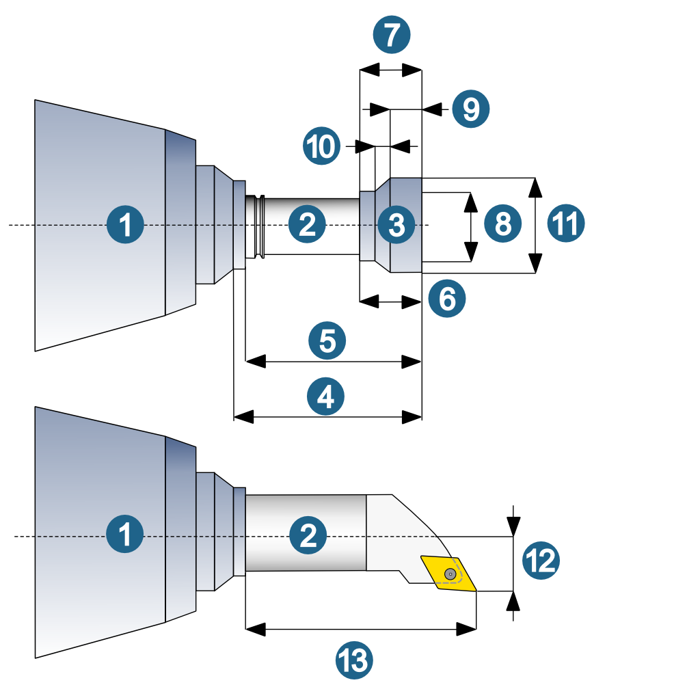
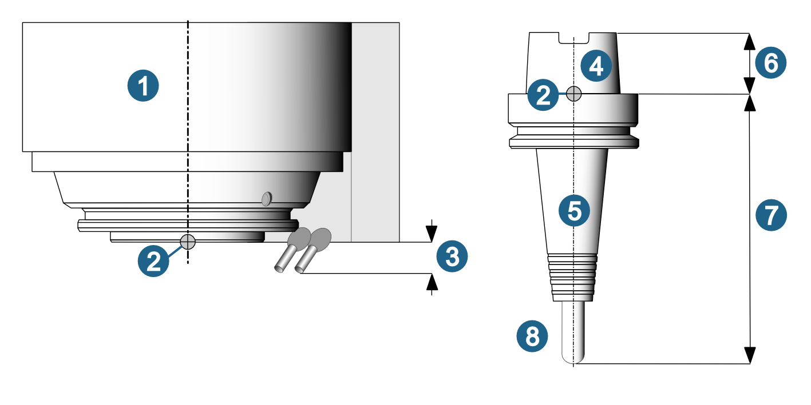

Geometry parameters
(1) Spindle, (2) Holder, (3) Tool, (4) Clearance length, (5) Gage length, (6) Tool reach, (7) Tool length, (8) Shank diameter, (9) Tip length, (10) Chamfer length, (11) Tool diameter, (12) Setting length z, (13) Setting length x.
|  |
The following figures show the parameters for Spindle, Holder, Tool and NC tool:
-
Milling spindle
-
Gage point: Used when connecting the tool to the machine to determine the Gage point offset (milling spindle/holder) and to calculate the Gage length.
-
Gage point offset (milling spindle): As a parameter of the milling spindle, this describes the offset from the gage point to the lower edge of the spindle elements that extend beyond the gage point (for example, cooling nozzles).
-
Fixture cone of the holder
-
Holder
-
Gage point offset (holder): As a parameter of the coupling, this describes the gage point offset to the geometric upper edge of the holder (fixture cone). The Gage point offset is only available for the Adapter coupling type.
-
Gage length: Length from the tool tip to the gage point.
-
Tool
|  |